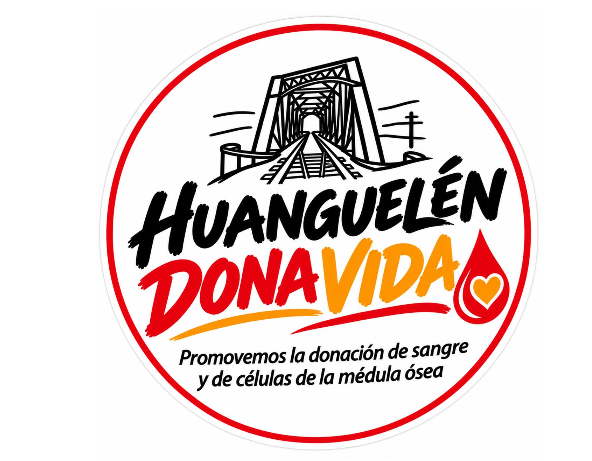

🩸 ¿Por qué donar?
La sangre donada se utiliza en distintas situaciones de atención de la salud, como cirugías y tratamientos.
Cada donación representa una oportunidad para alguien. Informarnos, compartir y participar puede marcar una gran diferencia.
INFORMATE · COMPARTÍ · CONCIENTIZÁ


La sangre no se puede fabricar. La donación voluntaria y habitual ayuda a que esté disponible cuando alguien la necesita.
La sangre donada se utiliza en distintas situaciones de atención de la salud, como cirugías y tratamientos.
Donar voluntariamente contribuye a mantener el suministro de sangre para los servicios de salud.
Los requisitos se evalúan en el lugar de donación por personal de salud capacitado.
Las células progenitoras hematopoyéticas son células capaces de dar origen a los distintos componentes de la sangre.
Principalmente en la médula ósea y también en la sangre periférica. La sangre del cordón umbilical es otra fuente.
Permite buscar personas compatibles con pacientes que necesitan un trasplante de CPH.
Es una coincidencia que se determina mediante estudios específicos.
Una donación de sangre puede ayudar a más de una persona, ya que la sangre se separa en distintos componentes según la necesidad.
La extracción suele durar pocos minutos. Con el registro y la recuperación, el proceso completo es breve.
El organismo repone el volumen de líquido donado en poco tiempo, y la donación se realiza bajo controles seguros.
La donación voluntaria y habitual ayuda a que siempre haya sangre disponible para quienes la necesitan.
Colocá las fichas en el orden correcto del recorrido. Podés arrastrarlas al tablero o seleccionar una y hacer clic donde corresponda.
Colocá las fichas en orden sobre el tablero: al soltarlas se quedan pegadas en el lugar donde las pongas. Si intentás colocar una ficha incorrecta o en un lugar ocupado, aparece una X y no se queda.
Elegí una ficha para comenzar.

Momentos, jornadas y personas que forman parte de Huanguelén Dona Vida.
La galería está conectada para mostrar una carpeta de Google Drive. Reemplazá REEMPLAZAR_ID_CARPETA por el ID real de la carpeta cuando esté disponible.
Encontrá los pares relacionados con la donación de sangre y CPH.
Información oficial sobre la donación de sangre en Argentina.
Visitar sitio oficial ↗Información y recursos sobre hemoterapia en la Provincia de Buenos Aires.
Visitar sitio oficial ↗Información sobre donación y trasplante de células progenitoras hematopoyéticas.
Visitar INCUCAI ↗Fotos y momentos de la campaña Huanguelén Dona Vida.
* Esta galería está preparada para mostrar una carpeta de Google Drive. Reemplazá el enlace en el código cuando tengan la carpeta final.